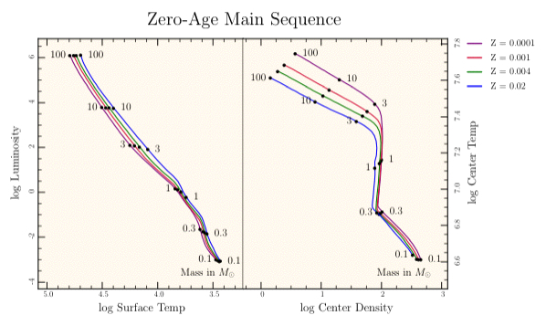
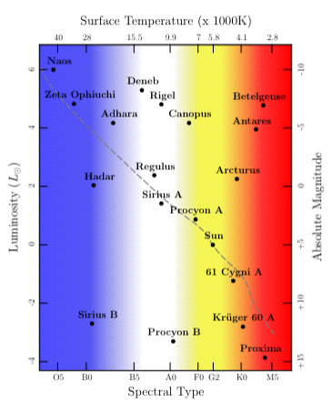

module Tioga::Tutorial::OtherStuff
How To's, Part 1: EPS ¶ ↑
Some publishers insist on eps format rather than pdf. Luckily 'pdftops' makes this easy (just add -eps to the command line). For the Mac, there is also a nice drag-and-drop converter called “Droppdftoeps” available at insti.physics.sunysb.edu/~siegel.
How To's, Part 2: Embedded Fonts¶ ↑
Some publishers insist on having ALL fonts embedded, even the standard 14 Adobe fonts that are required to be available in all PostScript/PDF implementations. Roy Mayfield provided a simple “one-liner” to take care of this using GhostScript:
gs -q -dNOPAUSE -dBATCH -dPDFSETTINGS=/prepress -sDEVICE=pdfwrite \
-sOutputFile=output.pdf input.pdf
Vincent Fourmond also provided a similar solution that uses an eps file intermediate:
pdftops -eps Plot.pdf epstopdf --nogs Plot.eps | gs -q -sDEVICE=pdfwrite -dAutoRotatePages=/None \ -dPDFSETTINGS=/prepress -sOutputFile=Plot_new.pdf -
Don't forget the - at the end of the epstopdf command!
What's in the other tioga/samples folders (and what's a “zams” anyway?)¶ ↑
We've now been through the “figures” folder and the “plots” folder in the samples. The remaining ones are included as examples of “real” cases using tioga to make plots. The plots and the data they represent come from my stellar evolution program, “EZ”. Here's the answer to what's a “zams”:
-
The “main sequence” is where stars spend most of their lives while they burn hydrogen in their cores. The zero-age main sequence, “ZAMS”, corresponds to stars that are just settling into their careers as hydrogen burners after having formed from a collapsing gas cloud.
The name EZ stands for “Evolve ZAMS”, and the remaining samples are all taken from the general topic of stellar evolution. However, the point of the samples is not to teach astrophysics, but to provide a set of more complex plots to illustrate tioga. We'll take a quick look at what's there, and I'll point out a few highlights along the way.
The starting place is the “zero age” stars, so go to the “zams” folder in “samples”, and open “zams.rb” in your editor.

Notice that we're plotting the same stuff for several different cases corresponding to different “Z” values (astro jargon for the fraction of mass in things other than hydrogen or helium). Instead of 1 data set, we have 4 sets with the same structure. This is reflected in the code by a new class definition, “ZAMS_Data”. The ZAMS_Data class knows how to read a set of data given a file name. The code makes 4 instances of this class, one for each of the data sets. If we decide to add a 5th data set, it simply means creating a fifth instance of the class. The plotting routines have iterators for doing each of the data objects. For example, here are the routines for plotting the center temperatures and the surface temperatures:
def temp_surface_plot zams_plot('log $T_{surface}$', 5.1, 3.2) do @zams_data_array.each_index do |i| zams = @zams_data_array[i] t.show_polyline(zams.log_Ms, zams.log_Tsurfs, @colors[i], @legends[i]) end end end def temp_center_plot zams_plot('log $T_{center}$', 7.83, 6.45) do @zams_data_array.each_index do |i| zams = @zams_data_array[i] t.show_polyline(zams.log_Ms, zams.log_Tcents, @colors[i], @legends[i]) end end end
They both call the “zams_plot” routine in “zams.rb” with a title and y boundaries as arguments followed by a block of code that loops through each of the data sets calling show_polyline.
def zams_plot(ylabel, ytop, ybottom, &cmd) t.xlabel = 'Mass ($M_{\odot}$)' t.ylabel = ylabel xleft =log10(0.09) xright = log10(101.0) t.xaxis_log_values = true t.xaxis_use_fixed_pt = true t.show_plot( 'left_boundary' => xleft, 'right_boundary' => xright, 'top_boundary' => ytop, 'bottom_boundary' => ybottom) { background; cmd.call } end
The final item in the definition of the arguments for zams_plot is a new one for us. The “&cmd” refers to the block of code in the caller. The command block is called on the last line as part of a show_plot.

The “ZAMS fancy” plot is mainly for fun. But it gives examples of setting up special tick labels as well as putting different information on each of the four sides of the frame. The background coloring is done with a call on axial_shading using a specially built color map. The gray dashed line shows the main sequence line where the stars burn their hydrogen. The stars off the line are at later stages of development, such as the red giant Betelgeuse and the white dwarf Procyon B.